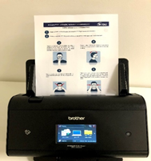
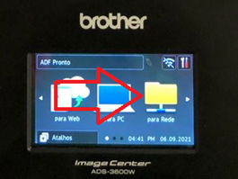
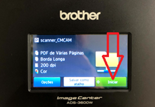
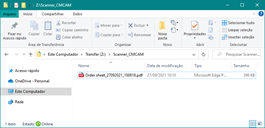
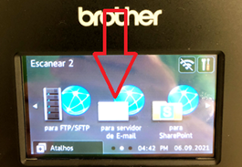
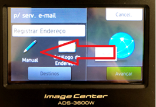
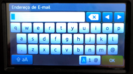
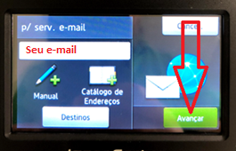
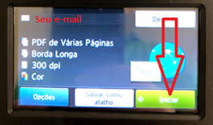

Instruções de uso do Scanner
>> Digitalização para Pasta de Rede
1. Inserir a folha que deseja digitalizar.

2. Na tela touch, clique na opção para Rede.

3. Clique no botão Inicar.

4. Automaticamente é gerado um arquivo e enviado para a pasta na rede. Ir nessa pasta e retirar o seu documento digitalizado.
CM - Z:\Scanner_CMCAM ou SEDE - Z:\Scanner_SEDE image

>> Digitalização para o E-mail
1. Inserir a folha que deseja digitalizar.
2. Na tela touch, clique na opção para servidor de E-mail.

3. Clique na opção Manual.

4. Digite o seu e-mail e depois clique no botão OK.

5. Clique no botão Avançar.

Clique no botão Iniciar.
